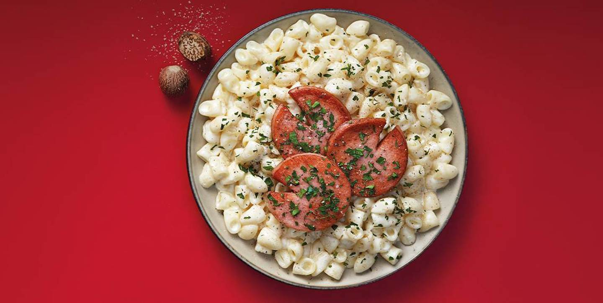

Ingredienser
- 4 portioner
- 5 dl Kungsörnen Gammaldags Idealmakaroner
- 8-10 dl mjölk (standard)
- ½ tsk salt
- Ev 2 krm finriven muskot
- 400 gr falukort
Så här tillagar du receptet (25 minuter):
- Koka upp mjölken sakta på medelvärme. Ju mer mjölk som tillsätts desto krämigare blir stuvningen.
- Tillsätt makaroner och salt. Koka på svag värme under omrörning i 15-20 minuter tills makaronerna är mjuka.
- lägg stekpanan på plattan med värme 6-7 och tilsätt smör i stek pannan
- börja lägga i korvarna när matlagnings smörek börjar bubbla sedan stek korvarna så dem blir gyllenbruna sen vänder du på korvarna och gör samma sak på andra sidan
- Smaksätt med finriven muskot. Servera med hackad persilja på maträtten och servera.